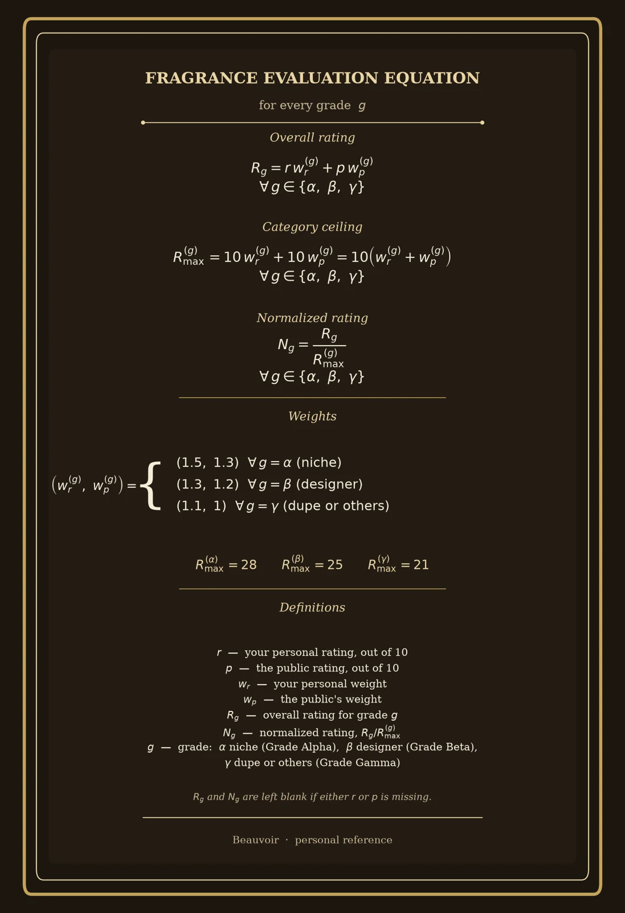

Home/Rating formula
How the scores work
Every fragrance carries two ratings out of 10: Randy's own (r) and a public rating (p). They are combined into an overall rating R, weighted by the fragrance's grade, then normalized so that bottles of different grades can be compared on one scale.
Overall rating
Rg = r · wr(g) + p · wp(g)
Grade ceiling
Rmax(g) = 10 · (wr(g) + wp(g))
Normalized rating
Ng = Rg ÷ Rmax(g)
Weights by grade
| Grade | Type | Randy's weight wr | Public weight wp | Ceiling Rmax |
|---|---|---|---|---|
| α Alpha | Niche | 1.5 | 1.3 | 28 |
| β Beta | Designer | 1.3 | 1.2 | 25 |
| γ Gamma | Inspired by | 1.1 | 1 | 21 |
Niche houses get the highest weights and designers sit in the middle. Inspired-by and other value houses use the lightest weights, so their ceiling is lower.
Definitions
- r: Randy's personal rating, out of 10.
- p: the public rating, out of 10. It combines Fragrantica (converted from /5) and Parfumo (/10), weighted toward the larger sample and rounded to a whole number.
- wr, wp: Randy's weight and the public's weight for the grade.
- Rg: overall rating for grade g. Ng: normalized rating from 0 to 1, shown to three decimals.
- Grades: α Alpha for niche, β Beta for designer, γ Gamma for inspired-by and other houses.
R and N are left blank when either rating is missing.
Worked example
Bleu de Chanel Parfum is a designer (Beta) fragrance with r = 9.5 and p = 9:
R = 9.5 × 1.3 + 9 × 1.2 = 23.15 Rmax = 25 N = 23.15 ÷ 25 = 0.926
